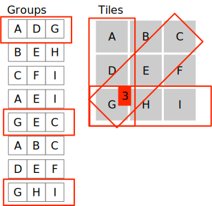

Aliasing on Purpose#
We say something is aliased when it has more
than one name. Mark Twain is an alias of
Samuel Clemens. Banksy is an alias of someone,
but at the time of this writing I don’t know
who. In software, we interpret “name” in a
broad way to mean any way of designating some
object. If x names the same object as
elements[3], then we say that object is
aliased and that x and elements[3] are
aliases.
When Aliasing Doesn’t Matter#
One reason for making immutable objects
is so that we can alias those objects without
worry. This is why str objects in Python
are immutable. If x refers to a string
object, I can set y = x without any worry
about the consequence of aliasing the string,
because there is nothing I can do to x
that will affect y. All the operations on
strings, like strip and split, return
new objects rather than changing the strings.
There is at least one way that we can observe
aliasing with immutable objects: The
comparison x is y checks whether x is
an alias of y. It can yield some surprises.
For example, Python sometimes aliases
int values that are equal, and sometimes
doesn’t:
PyDev console: starting.
Python 3.8.0 (v3.8.0:fa919fdf25,...)
>>> w = 5
>>> x = 5
>>> w is x
True
>>> w = 1000
>>> x = 1000
>>> w is x
False
As long as we use == instead of is, we need
not be concerned about whether int values or
str values are aliased. When we define our
own immutable classes, we aim for similar
behavior: The == (that is __eq__) operation
should define what we mean by “same”, and
aliasing (is) should be irrelevant.
When Aliasing is a Mistake#
While immutable objects are often convenient,
sometimes they are impractical. For example,
the list class in Python is mutable because
the append operation would be too expensive
if it returned a new list object; it is much
more efficient to modify (mutate) an
existing list object. But this means we must
be careful:
>>> m = [1, 2, 3]
>>> k = m
>>> k.append(4)
>>> print(m)
[1, 2, 3, 4]
This behavior, in which the value designated by one alias of an object is changed by an operation through another alias of the object, may be fine or even useful, but it may also lead to bugs that are difficult to find and correct. This is one reason that our coding style guidelines require us to make it very clear and apparent when a method is a mutator.
We have already seen examples where aliasing
a mutable object is a mistake. For example,
if Point objects are mutable (if they have
a move operation that changes a Point object,
instead of returning a new Point object), then
aliasing Point objects from different Rect
rectangle objects is probably a mistake. At the
very least it requires great care to do it
correctly, without unanticipated side effects.
When Aliasing is Helpful#
While unanticipated side effects can make aliasing a problem, occasionally we alias objects intentionally because we want to access the same objects in more than one way.
Suppose, for example, that we have a list of complex objects storing information about students. Each object representing a student might include a given name, a family name, and a student identification number, among other pieces of information like favorite ice cream flavor. We might want to find student records quickly using binary search for given name, family name, or student number. But binary search only works if the objects are in sorted order, and each of these search keys requires a different order!
Database systems have a simple solution to the problem of searching for the same objects by multiple keys: They keep multiple indexes with aliased references to the records.
While search structures are the most common intentional use of aliasing, it is also useful sometimes for refactoring program logic.
Consider the simple game known as
noughts and crosses
or tic tac toe.
Suppose the game board is represented by a
list of lists of Tile objects, using letters
a through i as position labels.
class Board:
"""Simple 3x3 Tic Tac Toe board"""
def __init__(self):
self.tiles = [[Tile('a'), Tile('b'), Tile('c')],
[Tile('d'), Tile('e'), Tile('f')],
[Tile('g'), Tile('h'), Tile('i')]]
A game of noughts and crosses is won when
there are three X or three O on tiles
in any row, column, or diagonal. We might
use an Enum to represent the X and O
marks:
class Mark(Enum):
xmark = "X"
omark = "O"
unmarked = "."
The logic for checking for a win in a row might look something like this:
def row_is_winner(self, row_index) -> bool:
mark_0 = self.tiles[row_index][0].mark
mark_1 = self.tiles[row_index][1].mark
mark_2 = self.tiles[row_index][2].mark
if mark_0 == Mark.unmarked:
return False
return mark_0 == mark_1 and mark_1 == mark_2
The logic for checking for a win in a column might look very similar:
def row_is_winner(self, col_index) -> bool:
mark_0 = self.tiles[0][col_index].mark
mark_1 = self.tiles[1][col_index].mark
mark_2 = self.tiles[2][col_index].mark
if mark_0 == Mark.unmarked:
return False
return mark_0 == mark_1 and mark_1 == mark_2
Checking a diagonal would be yet again almost the same logic on different sets of tiles.
Similar as these functions are, it is difficult
to combine them if the Tile objects are arranged
only in the single list-of-lists structure by
row and column. The logic can be factored easily,
though, if we alias the same set of tiles from
groups for rows, columns, and diagonals.
Now it is simple to write a single function to check whether a group is a winner:
def is_winner(group: List[Tile]) -> bool:
"""True if a win for *either* X or O"""
q, r, s = group
return (q.mark != Mark.unmarked
and q.mark == r.mark
and r.mark == s.mark)
It is easy to check all the rows, columns, and diagonals with a single loop:
def has_winner(self) -> bool:
"""There is some winning row or column (for either X or O)"""
for group in self.groups:
if is_winner(group):
return True
return False
We have not really removed the complexity of traversing the board in three different orders, because we must traverse it to build the tile groups that represent those different orders.
def __init__(self):
self.tiles = [[Tile('a'), Tile('b'), Tile('c')],
[Tile('d'), Tile('e'), Tile('f')],
[Tile('g'), Tile('h'), Tile('i')]]
# 3-in-a-row can be horizontal, vertical, or diagonal
self.groups = []
# horizontal
for row in self.tiles:
self.groups.append(row)
# vertical
for col_i in range(3):
group = []
for row_i in range(3):
group.append(self.tiles[row_i][col_i])
self.groups.append(group)
# diagonal left-to-right
self.groups.append([self.tiles[i][i] for i in range(3)])
# diagonal right-to-left
self.groups.append([self.tiles[i][2-i] for i in range(3)])
However, we need do that
only once, as we do here in the constructor.
We can separate that logic from
the logic of checking for a winner. The
advantage becomes much larger if we use the
groups in additional ways involving different
logic. For example, we might write another
function to choose a tile to mark with an X
or O, selecting the best move by using the
same groups.
def choose_for(self, mark: Mark) -> str:
"""Returns the most worthwhile position for
mark to take, assuming it is the turn for
mark and that there are open positions.
"""
# We use the 'worth' field of the tiles to tally
# how valuable each position is.
for row in self.tiles:
for col in row:
col.worth = 0
for group in self.groups:
worth = calc_worth(group, mark)
for tile in group:
# No harm in granting worth to marked tiles
tile.worth += worth
# Pick open tile with max worth
all_tiles = self.tiles[0] + self.tiles[1] + self.tiles[2]
open_tiles = [tile for tile in all_tiles if tile.mark == Mark.unmarked]
open_tiles.sort(key=lambda tile: tile.worth, reverse=True)
return open_tiles[0].name
Notice that in the above method, we are looping
through the same set of tiles in different ways.
We first loop through by row and column to
initialize the worth fields. Then we loop
through them in multiple orders using the
groups, which refer to the very same Tile
objects ordered by row, column, and diagonal.
Note also that a single tile will be accessed
multiple times in different groups,
potentially accumulating
worth each time it is accessed. On the initially
empty board, a middle tile along one side
will be accessed once in a row group and once
in a column group, accumulating a total
worth of 2.
A corner tile accumulates worth from a row group, a column group, and a diagonal group, because it can be used to form winning combinations in each of those groupings:

Alternatives#
The groups structure for aliasing groups
of tiles in different orders
is not the only way we could arrange
different access orders for the tiles.
We could have written methods or
functions to return lists of tiles in the
desired order each time we needed them. Python
also provides generators, which are identical
to functions except they may return several
results, one at a time. (The range
function is actually a generator; it returns
elements of the range one by one, not all
together in a list.)
The main advantage of building the groups
structure is that we only build it once, and
then use it several times.
Summary#
If there is more than one way of designating (“naming”) the same object, we say the object is “aliased”. Aliasing immutable objects usually has no observable effect, and often we design objects to be immutable so that we can alias them freely. We must be careful when aliasing mutable objects, because a change to the object through one “name” will be observable as a change to the object through any other “names” it may have.
While aliasing can dangerous, it can also be useful. Sometimes we need different ways to designate the same set of objects, as when we traverse a collection repeatedly in different orders. And sometimes making a change to an object accessed through one name visible when the same object is accessed through other names is exactly what we want. We illustrated this by accumulating the “worth” of game tiles accessed in different orders.